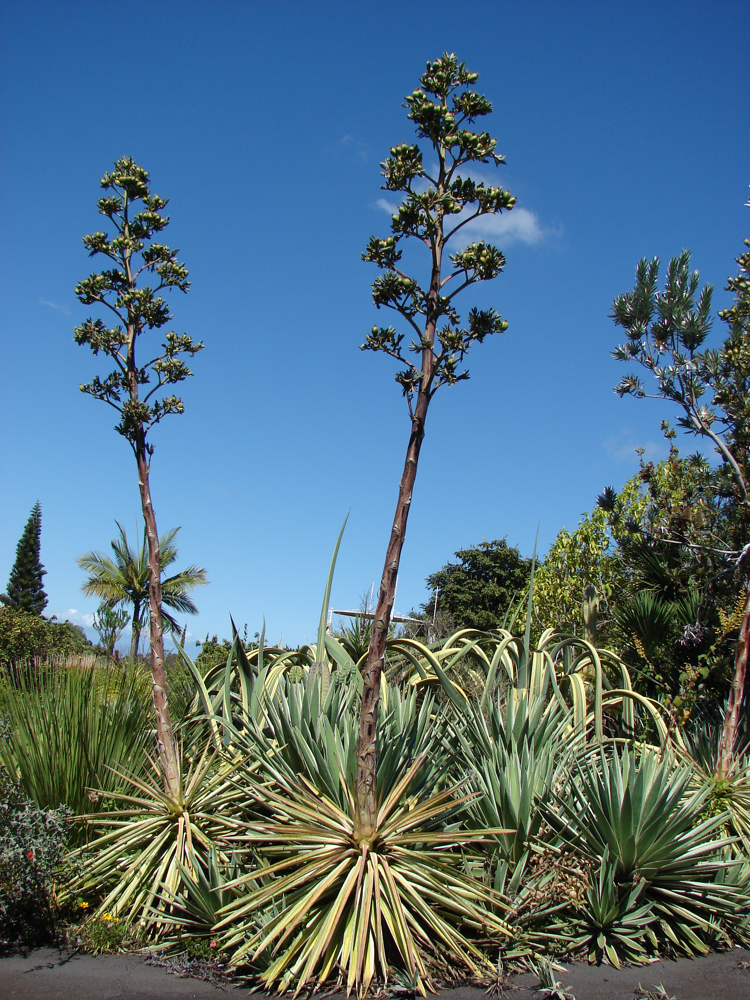

El mezcal se ha convertido en uno de los productos más representativos de México a nivel internacional, ya que su carácter artesanal y su variedad de presentaciones lo han convertido en una bebida altamente demandada en mercados nacionales y extranjeros. Recientemente, San Luis de la Paz, municipio de Guanajuato, se sumó a los estados de Guerrero, Durango, San Luis Potosí, Zacatecas y a algunas regiones de Oaxaca, Tamaulipas, Michoacán y Guanajuato, como zona de denominación de origen del mezcal. En México, son ocho los estados productores de mezcal: Zacatecas, Durango, Guerrero, Michoacán, San Luis Potosí, Guanajuato, Tamaulipas y Oaxaca, todos ellos cuentan con la denominación de origen del producto. Para el Instituto Mexicano de la Propiedad Industrial (IMPI), máxima autoridad administrativa en materia de propiedad industrial en México, esta bebida se ha convertido en motor de desarrollo económico, especialmente en zonas marginadas, ya que en su mayoría, son pequeños productores, que con el crecimiento de la industria están obteniendo beneficios directos. Entre los beneficios que se identifican de los productos con denominaciones de origen está el del sector económico, ya que brindan mayores oportunidades al sector productivo en México, al mismo tiempo que se protege al consumidor. Además, la fabricación de productos vinculados al origen o procedencia fortalece la identidad y las tradiciones de las regiones y desinhibe la migración, al brindar trabajo arraigado al territorio. DATOS ECONÓMICOS De acuerdo con datos oficiales, en los últimos cuatro años las ventas nacionales de mezcal crecieron 110 por ciento, al pasar de 320 mil litro en 2010, a 650 mil el año pasado. En tanto, las exportaciones aumentaron 137 por ciento al moverse de 414 mil litros a 980 mil en el mismo lapso referido. Los principales mercados de exportación son Estados Unidos, Inglaterra, Alemania, Francia, España, Italia, Australia y Chile. EL MEZCAL El mezcal es una bebida alcohólica que se obtiene de la destilación del jugo fermentado de las cabezas o piñas de agave cocidas. La bebida está vinculada no solo con el ceremonial y la fiesta, al ser usado para limpiar las milpas, las construcciones y las cruces, sino también con aspectos medicinales.

El mezcal es una bebida alcohólica tradicional de México que se elabora a partir del agave, una planta que requiere tiempo
y paciencia para crecer antes de que pueda ser cosechada y convertida en esta exquisita bebida. En este artículo, exploraremos
en detalle el proceso de crecimiento del agave y cuánto tiempo se necesita antes de que esté listo para la producción de mezcal.
El Agave: La Base del Mezcal
El agave es una planta suculenta que se cultiva en diversas regiones de México, siendo las más famosas las denominaciones de
origen como Oaxaca, Guerrero, Durango y Jalisco. Para producir mezcal de calidad, se requiere el agave adecuado, y el más comúnmente
utilizado es el Agave Espadín,
aunque existen varias variedades.
La Espera del Agave: Paciencia y Cuidado
El tiempo que lleva crecer un agave hasta la madurez es una de las características que hacen que el mezcal sea tan especial.
En promedio, un agave necesita
entre 7 y 10 años para alcanzar la madurez adecuada para la producción de mezcal. Durante este tiempo, los agricultores deben cuidar y mantener las plantas, protegiéndolas de plagas y asegurándose de que reciban la cantidad adecuada de agua y sol.
Si hablamos de espirituosos mexicanos, sin duda, el más famoso tanto a nivel nacional como internacional es el tequila, seguido del mezcal, que en los últimos años ha ganado
popularidad en su consumo. Lo cierto es que cada una de estas bebidas cuenta con aspectos que las hacen muy especiales y agradables al paladar.
Las dos bebidas son extraídas del agave. Sin embargo, el tequila solo se puede producir del agave azul, mejor conocido como tequilana Weber, mientras que,
para el mezcal, pueden utilizar diversas variedades de la planta. Conocer las diferencias básicas entre estas dos bebidas no solo te convierte en un conocedor, también te abre el panorama para disfrutarlas en distintos momentos, reuniones o maridajes.
Aunque el mezcal se consume tradicionalmente solo, hay que tener en cuenta varios matices a la hora de disfrutarlo para apreciar plenamente sus características únicas.
El mezcal no está pensado para un consumo rápido, sino para degustarlo lentamente.
Aunque, cada persona debe disfrutar de su mezcal como le plazca, le daremos algunas pautas para que aproveche al máximo su experiencia con el mezcal y para mostrarle, si desea seguirla, la forma correcta de beber mezcal:
a) Vasos: Para servir el mezcal, opta por un vaso de chupito tradicional o un pequeño snifter. Estos recipientes potencian la exploración sensorial de la bebida espirituosa.
b) Temperatura: El mezcal debe servirse a temperatura ambiente. Si se enfría puede entorpecer sus intrincados sabores y cautivadores aromas. Temperatura ambiente: El mezcal debe disfrutarse siempre a temperatura ambiente, ya que el frío puede disminuir su perfil de sabor.
d) Maridaje: Considere maridar el mezcal con platos mexicanos tradicionales, como tacos, o disfrutarlo como digestivo después de una comida.
e) La calidad importa: Elige un mezcal de alta calidad que se haya elaborado siguiendo los métodos tradicionales.
c) Bebe despacio: Beba el mezcal lentamente, dejando que cada nota se despliegue y revele su complejidad.
Además, una técnica esencial, a menudo denominada técnica del “beso” por los aficionados, se considera la forma adecuada de sorber y saborear el mezcal.
contáctanos a través de los siguientes medios: 951 400 09 21